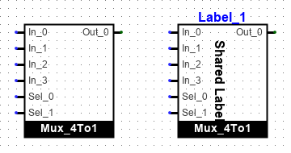
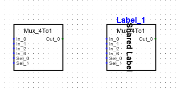
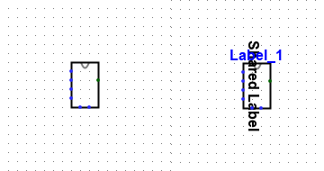

Selecting the appearance of a subcircuit
There are four models of graphical representation for the cicuit (Logisim-Classical,Logisim-holycross,Logisim-Evolution and Personalized). The version of the presentation is selectable in the Circuit Appearance property.
In the Logisim-Evolution appearance, the sub-circuit is drawn in a rectangle with the name of the circuit to the south in a black rectangle. The dimension of the circuit drawing is adapted to the content if the Fixed box size property is no. The inputs will be positioned to the east and the outputs to the west according to the order of their appearance (from left to right and from top to bottom) in the detailed drawing. The anchor is at the top of the northwestern pine.

In the Logisim-holycross appearance the sub-circuit is drawn in a rectangle with the name of the circuit to the north, the inputs to the east and the outputs to the west. The inputs will be positioned to the east and the outputs to the west in the same way as in the previous appearance.

In the Logisim-Classical appearance the sub-circuit is drawn in an unnamed rectangle, its size will depend on the number of inputs and outputs. The input and output will be positioned on the north, south, east, west sides according to their orientation and the order of their appearance (from left to right and from top to bottom) in the detailed diagram. The anchor is at the top of the northwestern pine.

It is possible to edit a label on the subcircuit instance by double-clicking on the rectangle. The position of the font and the attributes of the font can be modified in the property table. The same table allows the setting of the another shared label (for all instances).Next: Customize the appearance.